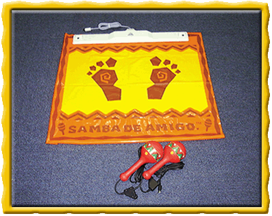
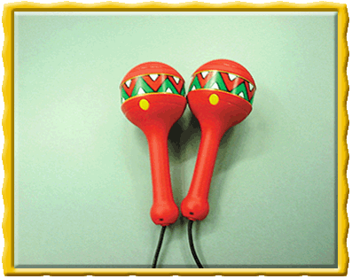
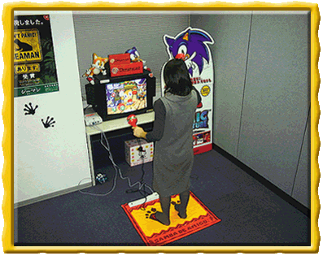

|
||||
ドリームキャスト用 マラカスコントローラを大公開！
これが、「サンバＤＥアミーゴ」と同時発売のマラカス型コントローラだ！
マラカスコントローラの空間での位置をベースユニットとの信号のやりとりで検出して、
マラカスの動きをダイレクトにゲームに反映できるんだ。
マラカスコントローラを他のコントローラにつけかえれば、将来的には空間認識技術をつかって
剣を振ったり、バットを振ったりと新しい遊びが楽しめるようになるかもしれないぞ！
マラカスだけど超最新技術のコントローラで、君もアミーゴ！
|  | マラカスコントローラのセット内容は ＊マラカスコントローラ ＊ベースユニット ＊マット で構成されてるんだ！ |
|  | アーケードには無かったボタンが左右に２つ付いたんだ。 マラカスは、軽くそして細くアーケードよりも振りやすくなって、１日中サンバを踊れるぐらいにイイカンジだぞ！ |
|  | 実際にサンバをプレーしてもらったぞ！ 君の家でもこんなかんじでサンバを楽しめるんだ！ |
| （写真は開発中のものです。）
|
サンバＤＥアミーゴ 対応 マラカスコントローラ(単体)：￥７,８００（税別）／ 発売中！
サンバのトップページへ
| ｜ Presented By SONIC TEAM 2000 ｜ |